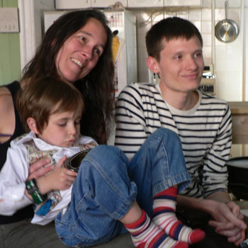

Podcast mp3
By Leland, on June 13, 2006
{ books }

For those of you who were unable to listen to our high-tech podcast yesterday, you can try this link, which is an mp3 and should play on every computer. Unfortunately, you’ll miss out on the snapshots.
Thanks to Nathan for the technical help!

Comments
Thanks for the new link, Leland. This one worked for me!
I enjoyed hearing that conversation — Ayun is very funny and engaging, and I loved her non-stop laugh. The interview, plus Rebecca’s enthusiastic endorsements, made me want to go buy the book so I think your mission was successful.
And Leland, in your previous post when you said that Ayun got a sweet deal when she recruited your Mom into her PR machine, you were so right! Actually both of you really went the extra mile on this one. Ayun is very lucky.
I’ve read several of the interviews she’s done on line and this one was far and away the best in truly giving me a sense of who she was.
This new link worked for me too this time! What a great interview. I’m so mad; I just got back from Barnes & Noble and I should have looked for the book. Oh well—next time!
This link worked for me. Ayun is very down-to-earth and humorous! I like her comments re whole foods and organics—also the fact that her husband got these various parts of an organic pig and she may have to get off vegetarianism for awhile!
Well done by all of you!
The link worked fine for me. What a great idea: a virtual book tour! Doesn’t matter when you have time: just click and listen. Ayun’s stories sent me looking for her book. Her stories resonate with me because I have family recipes that leave me believing that my Nana is watching me carry on her traditions.
I look forward to the next interview. More snapshots!
Add a comment